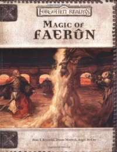

“Magic of Faerûn” on the
Shelf of Many Books

Magic of Faerûn
D&D 3.0
(3e)
Year
: 2001 (August)
Magic of Faerûn
on Amazon
Magic of Faerûn
on TSR Info
Known monsters from the book:
Celestial Viper
Crossroads Guardian
Crypt Spawn
Fiendish Viper
Magister
Scalamagdrion
Spectator
Spectral Mage